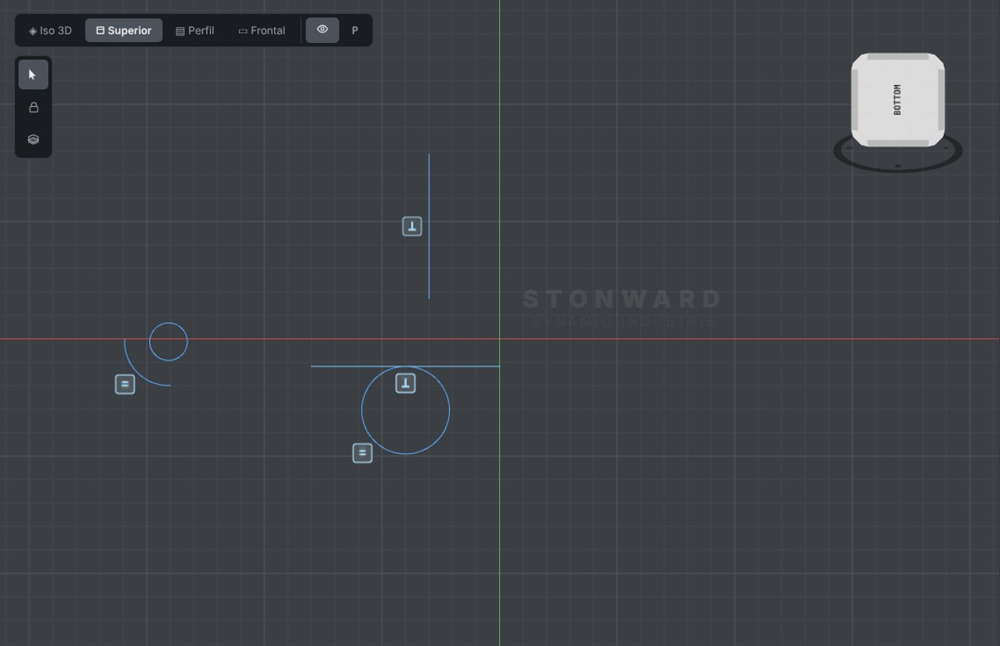
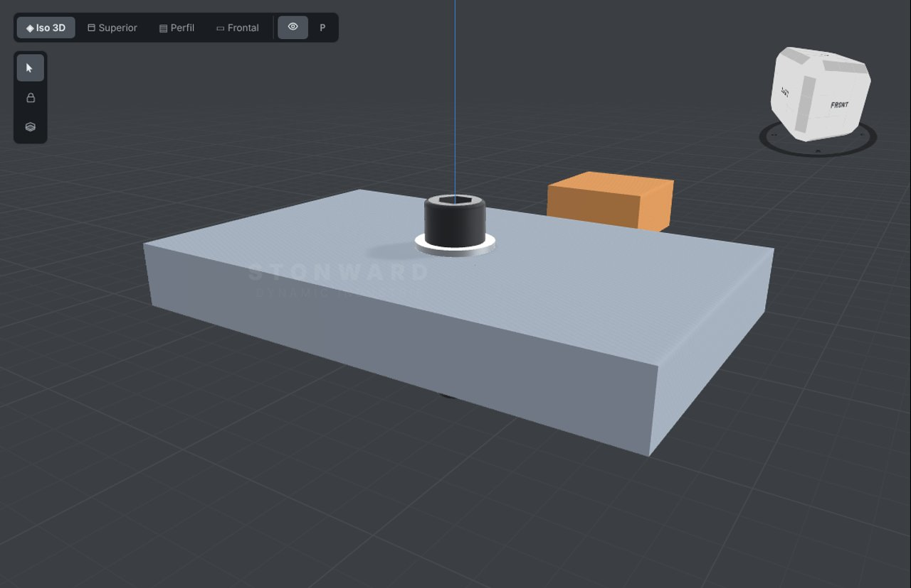

Qué es SolidMaker
SolidMaker reúne en un solo programa todo el camino de una pieza: el diseño en CAD, el ensamble, la prueba en banco, el laminado y el envío a la máquina. Cada etapa es un motor que se elige en la barra lateral izquierda.
| Motor | Para qué sirve |
|---|---|
| CAD | Croquis 2D, sólidos exactos, ensambles, biblioteca de piezas y materiales. |
| Banco | Banco de pruebas: PLC con diagrama ladder y simulación de componentes. |
| Maquinado (MACHIN) | Gemelo 3D de cada máquina, simulación de G-code y conexión con la máquina real. |
| Sistemas | Integración de sistemas y control. |
| Laminador polar | Prepara las piezas para imprimir, incluida la impresión polar de PolarONE. |
| Análisis | Revisión y análisis de las piezas. |

Instalación
SolidMaker funciona como una aplicación de escritorio: un servidor local abre su propia ventana. Los proyectos se guardan en la carpeta de datos que elijas en la configuración.
La interfaz
- Barra superior: menús desplegables por tema (Documento, Ensamble, Material, Operaciones, Corte, Anotación, Editar, Transformaciones, Patrones, Chapa, Mecanizado…). La barra nunca pasa de dos filas.
- Visor 3D: vistas Iso 3D, Superior, Perfil y Frontal, y el cubo de vistas para girar. Doble clic sobre una pieza la encuadra; doble clic en el vacío vuelve a la vista clásica.
- Panel derecho: cambia entre Sketches, Gestor y Asistente con botones pequeños. Abrir un panel lateral cierra el del otro lado.
- Barra de estado: plano activo, posición del cursor, selección y mensajes de cada herramienta.
Croquis 2D
Activa un plano (Superior, Frontal o Perfil, o clic derecho sobre una cara en la vista Iso 3D) y elige una herramienta: Línea, Círculo, Arco, Rectángulo, Polígono o Spline. Cada una tiene variantes en su flecha ▾.
Escribir medidas mientras dibujas
Con una herramienta activa, empieza a teclear y aparece una casilla junto al cursor. Enter coloca el punto.
| Escribes | Resultado |
|---|---|
50 | Punto a 50 mm en la dirección del cursor. |
50<30 | 50 mm a 30 grados desde el punto anterior. |
@20,10 | 20 mm en X y 10 en Y desde el punto anterior. |
40,20 | Coordenada absoluta X 40, Y 20. |
Los números aceptan expresiones, como 20*2 o 3/4*10.
Snaps y rastreo
El cursor se pega a extremos, puntos medios, centros, cuadrantes, cruces, tangentes y perpendiculares, cada uno con su marca. Con el rastreo (F11) dejas el cursor quieto un momento sobre un punto para adquirirlo y salen guías punteadas desde él; el cruce de dos guías también es un snap. F8 activa ORTHO y F10 POLAR.
Cotas y relaciones
Anotación ▾ → Cota. Haz clic en una línea, en dos puntos, en dos líneas (ángulo) o en un círculo o arco (diámetro o radio). Escribe el valor y la geometría se ajusta. Las cotas aceptan ecuaciones que usan otras cotas por su nombre (d1*2). Doble clic sobre una cota la edita.
Anotación ▾ → Relaciones. Horizontal, Vertical, Paralela, Perpendicular, Igual, Coincidente, Tangente, Concéntrica y Fija. Eliges la relación, haces clic en cada trazo y el croquis se resuelve al instante. Cada relación deja una marca junto al trazo; doble clic sobre la marca la borra.

Ver grados de libertad pinta de azul lo que todavía se puede mover y de blanco lo que ya está totalmente definido. Si una cota o relación choca con otras, SolidMaker dice cuáles son.
Editar trazos
- Editar ▾: Trim, Extend y Split funcionan con líneas, arcos y círculos. Estirar mueve solo los puntos dentro de una ventana. Unir trazos encadena trazos que se tocan; Descomponer parte polilíneas en tramos.
- Transformaciones ▾: Mover, Copiar, Rotar, Escalar y Simetría con punto base, usando snaps y medidas tecleadas.
- Acabado ▾: empalme y chaflán entre rectas y arcos.
- Con la herramienta Seleccionar: arrastra una figura seleccionada para moverla; Supr la borra; Ctrl+C / Ctrl+V la copia a cualquier plano.
Sólidos
Desde un croquis cerrado, Operaciones ▾ crea Extrusión, Revolución y Barrido; Corte ▾ los resta de forma exacta. Patrones ▾ repite en línea, en círculo o por simetría; Chapa ▾ hace bridas y dobleces; Mecanizado ▾ agrega taladros, roscados, avellanados y abocardados. La biblioteca trae piezas normalizadas: tornillería, rodamientos, perfiles, motores NEMA y más. Ctrl+D duplica la pieza seleccionada.
Ensambles
Ensamble ▾ une piezas con mates y juntas (bisagra y deslizante) que puedes mover. La acción Unir entiende la intención: un tornillo con su arandela y su tuerca, o dos engranes que engranan. Con «Evitar choques» las piezas no se atraviesan al arrastrarlas.

MACHIN y máquinas
MACHIN muestra el gemelo 3D de la máquina y simula el G-code antes de imprimir o maquinar. Las máquinas por defecto vienen instaladas; las nuevas se descargan desde la sección Máquinas.
- Descarga el paquete .zip de la máquina.
- En MACHIN abre Máquina → Adquirir nueva máquina y elige el .zip.
- Reinicia SolidMaker: la máquina aparece en el menú Máquina con sus piezas, su cinemática y su driver.
Atajos
| Tecla | Acción |
|---|---|
| Esc | Cancela la herramienta o vacía la selección. |
| Ctrl+Z | Deshacer. |
| Ctrl+C / Ctrl+V | Copiar y pegar trazos o piezas. |
| Ctrl+D | Duplicar la pieza seleccionada. |
| Supr | Borrar la selección. |
| F8 / F10 / F11 | ORTHO / POLAR / rastreo. |
| Enter o doble clic | Cerrar polilíneas y splines. |
Videos
Videos cortos de cada herramienta. Se irán publicando aquí.
Casos paso a paso
1. Una placa totalmente definida
- Activa el plano Superior y elige Rectángulo. Teclea
0,0y Enter, luego80,50y Enter. - Elige Círculo y coloca uno dentro de la placa.
- En Anotación ▾ → Cota, acota el lado inferior (80), el lado izquierdo (50) y el diámetro del círculo (8).
- Acota la distancia del centro del círculo a dos lados.
- Abre Anotación ▾ → Ver grados de libertad: cuando todo está blanco, la placa está totalmente definida.
- Con Operaciones ▾ → Extruir, dale 6 mm de espesor.
2. Una ranura con relaciones
- Dibuja dos líneas casi paralelas y dos arcos en sus extremos.
- En Anotación ▾ → Relaciones aplica Paralela a las dos líneas.
- Aplica Tangente entre cada arco y cada línea, e Igual entre los dos arcos.
- Acota el radio de un arco: el otro lo sigue por la relación Igual.
3. Instalar SD-C1 y simular una impresión
- Descarga el paquete de SD-C1.
- En MACHIN, Máquina → Adquirir nueva máquina, elige el .zip y reinicia.
- Elige SD-C1 en el menú Máquina y abre la puerta con su control para ver dentro.
- Ejecuta la demo: la pantalla táctil de la consola muestra el avance de la impresión.